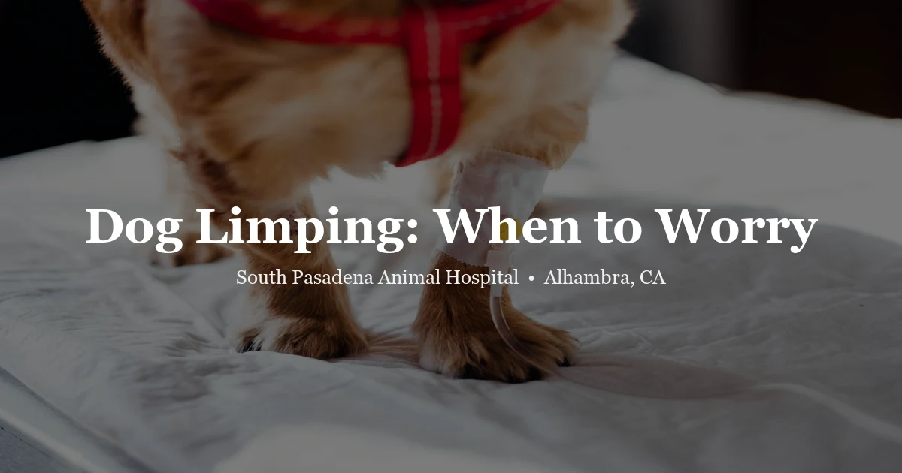

May 8, 2026 · 8 min read
Dog Limping: When to Watch and When to Worry

A limp can be a thorn in the paw. It can also be a torn ligament, a fracture, bone cancer, or severe hip arthritis. The challenge is that from the outside, they can all look similar at first glance — your dog favors one leg and you're trying to figure out how worried to be.
We see limping dogs in our Alhambra clinic regularly. Here's how we think through it — and how you can start doing the same before deciding whether to call us.
First: what kind of limp is it?
Not all limps are equal. Two important things to observe right away:
Weight-bearing vs. non-weight-bearing. Is your dog still putting some weight on the leg, or are they holding it completely up? A dog that won't touch the leg to the ground at all — especially if it came on suddenly — is more urgent than a dog that's walking but favoring one side.
Gradual vs. sudden onset. Did the limp appear out of nowhere (during a walk, after jumping off the couch, during play)? Or has it been slowly getting worse over days or weeks? Sudden limps tend to indicate an acute injury. Gradual limps often point to a degenerative process like arthritis or hip dysplasia.
Common causes by leg location
Front leg limping
Front legs carry about 60% of a dog's body weight, so injuries here affect movement significantly. Common causes:
- Paw injuries: Cuts, thorns, cracked or burned pads, broken nails. Always check the paw first — this is the most overlooked quick fix.
- Soft tissue sprains: A dog that jumped oddly or landed wrong. Usually improves with rest in 24–48 hours.
- Elbow dysplasia: Particularly common in young Labrador Retrievers, German Shepherds, Rottweilers, and Golden Retrievers. Often presents as a persistent low-grade front leg limp in a dog under 2 years old.
- Shoulder OCD (osteochondrosis): Also affects young large-breed dogs. Causes lameness that worsens after activity.
- Osteosarcoma (bone cancer): Not common, but in large and giant breeds over age 7, a sudden painful front limb limp — especially around the lower leg near the wrist — should raise this concern. Osteosarcoma typically presents as a firm swelling and worsening pain. It's one we don't want to miss.
Back leg limping
Back leg limps in dogs are extremely common and have a shorter list of usual suspects:
- CCL (cranial cruciate ligament) tear: The canine equivalent of an ACL tear in people. This is one of the most common orthopedic injuries we see in dogs. It often presents as sudden non-weight-bearing lameness on one back leg, sometimes after a normal walk or play session. In larger dogs it can happen without trauma — the ligament degenerates over time and then finally gives way. Surgery is almost always the recommended treatment.
- Patellar luxation: The kneecap slips out of its groove. Very common in small breeds — Chihuahuas, Yorkies, Pomeranians. Dogs may skip or hop occasionally, holding the leg up for a step or two, then resume walking normally. Mild cases can be managed; severe cases require surgery.
- Hip dysplasia: Common in large breeds. Causes a chronic, gradual rear limb lameness that worsens with activity. Dogs may bunny-hop at a run, have trouble rising, or sway in the hindquarters.
- Intervertebral disc disease (IVDD): In dachshunds, Corgis, Basset Hounds, and other chondrodystrophic breeds, a ruptured disc can cause sudden hindlimb weakness or paralysis alongside a limp. If your dog is also stumbling, dragging a foot, or seems weak in the back end — that's an emergency.
The hot pavement problem in Southern California
This one catches people off guard every summer. In LA and the SGV, asphalt temperatures on a 90°F day can hit 140°F or higher. We see burned paw pads regularly — and it's entirely preventable. If your dog suddenly starts limping in summer, check the pads. They should be smooth and pliable. If they look red, dry, raw, or are peeling — that's a burn. Come in.
The rule of thumb: if the pavement is too hot to hold your bare hand on for 5 seconds, it's too hot for your dog to walk on.
Common owner mistakes
Giving human pain meds. Ibuprofen and acetaminophen are toxic to dogs. Aspirin can work in a pinch but has real GI risks. Don't give anything without asking us first. If you need short-term pain relief before a vet visit, call us and we'll advise.
Waiting weeks on a gradual limp. Gradual limps are sneaky — they don't alarm people the way sudden non-weight-bearing does. But a limp that's been there for two weeks and slowly worsening is worth a visit. Earlier diagnosis and intervention usually means better outcomes, especially for degenerative conditions.
Forcing rest when the dog seems fine. After a mild sprain, restricted activity for 2–3 days is appropriate. But if the dog is "better" and then limps again the next day after exercise, that pattern needs investigation.
When to watch vs. when to come in
Watch at home (24–48 hours): The limp appeared after exercise and the dog is still bearing weight. You can identify a clear minor cause (thorn, cracked nail that you've already addressed). No swelling, no crying, no other symptoms.
Call us within 24 hours: Limp hasn't improved after 24 hours of rest. Gradual limp that's been present for more than a week. Dog is limping and also seems painful when you touch the area.
Come in same day: Dog won't bear any weight. There's visible swelling, deformity, or an open wound. Dog is crying, whimpering, or snapping when you approach the leg. Limp started after a known fall or trauma.
Emergency: Leg is at an abnormal angle (possible fracture). You suspect the dog ingested something (toxins can cause weakness that mimics a limp). Back leg weakness or knuckling combined with a limp.
What we do at the visit
We start with a thorough orthopedic exam — watching the dog walk, palpating each joint for pain and range of motion, applying specific stress tests (like a drawer test for CCL tears). Then we'll recommend X-rays as appropriate. Most orthopedic diagnoses can be confirmed or strongly suspected based on these two steps.
If we suspect something beyond a sprain — a CCL tear, osteosarcoma, hip dysplasia — we'll talk about next steps and, if needed, refer to an orthopedic surgeon or specialist for advanced imaging or surgery.
We see dogs at South Pasadena Animal Hospital in Alhambra. Call (626) 441-1314 or book via our contact page. See pricing for visit details.
Frequently Asked Questions
Should I take my dog to the vet if they're limping?
Depends on severity. A mild post-exercise limp that improves with 24–48 hours of rest can be monitored at home. But if the dog won't put weight on the leg, or if the limp persists beyond 48 hours, get it checked. We'd rather see it and it be nothing than miss something developing.
What is a CCL tear and why is it so common?
The CCL (cranial cruciate ligament) is the canine equivalent of the human ACL. Partial or complete tears are one of the most common orthopedic injuries in dogs, especially in medium-to-large breeds. Sudden rear limb lameness — especially in a dog that was just playing normally — is a common presentation. Surgery is usually recommended.
Can hot pavement cause limping in dogs?
Yes. Burned paw pads from hot asphalt cause limping and can be quite painful. In Southern California summers, this is a real hazard. Check the time of day you walk (early morning is safest), and check the pavement temperature with your hand first.
What can I give my dog for pain if they're limping?
Don't give ibuprofen or Tylenol — both are toxic to dogs. Call us and we can advise on appropriate short-term options. We'd rather guide you safely than have you treat at home with something harmful.